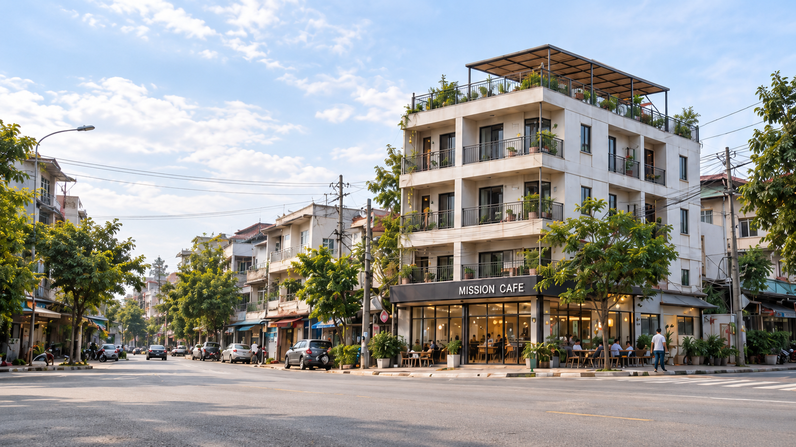
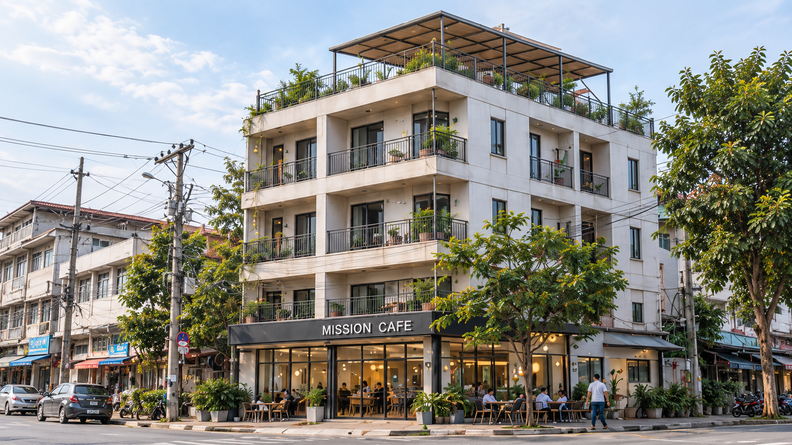
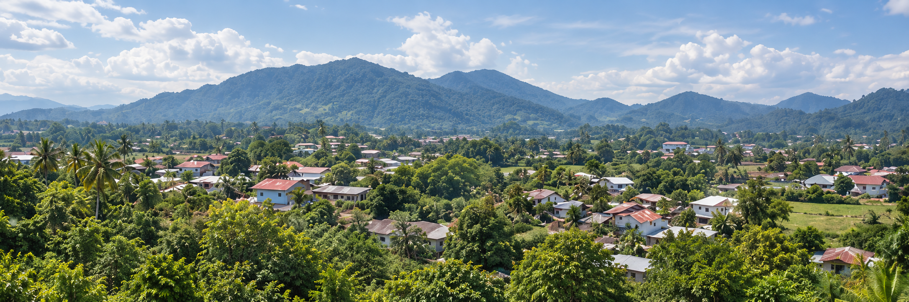

MISSION VISION CENTER
아산에서 열방으로, 한 영혼에서 세계로
Mission: from ASAN to the NATIONS!
프로젝트 추진 중동남아시아를 거점으로 예배·교육·선교사 지원과 자립 사업을 연결하는 복합 선교센터를 준비합니다.
예배와 교육, 공동체와 일터가 연결되어 영혼을 구원하고 선교 동역자를 세우는 동남아 선교의 전진기지를 꿈꿉니다.
BAM · Business As Mission
사업 수익을 센터 운영과 장학금에 재투자하는 자립형 선교 모델
한국어 교육과 유학·취업 연계로 현지 청년의 성장을 돕습니다.
함께 생활하고 말씀을 배우며 미래의 선교 동역자를 세웁니다.
청년의 일자리를 만들고 센터 운영과 장학금을 지원합니다.
선교사의 쉼과 재충전을 돕고 동남아 사역 네트워크를 연결합니다.
다국어 예배와 제자훈련을 통해 열방으로 나아갈 동역자를 세웁니다.

교육과 생활, 예배와 일터가 함께하는 복합 선교 공간
법인 등록 및 부지·건물 검토
리모델링 및 설비 준비
한국어학당 도전·원두 시제품 생산
공동체 운영 및 선교 파송
일정과 공간 구성은 추진 과정에 따라 조정될 수 있습니다.
